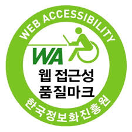

모든 사용자(일반인, 장애인, 노인, 어린이 등)가 차별없이 이용할 수 있어야 한다. 현실적으로 시각장애인을 주 대상으로 하며, 대한민국에는 이를 장애인 차별을 금지하는 법이 있다.(장애인 차별 금지법)
웹사이트에 접근하는 모든 통신기기, (운영체제, 브라우저)의 환경과 관계없이 원활히 이용할 수 있어야 한다. 현실적으로 대한민국에서는 크로스브라우징이 중요하다.

의미에 맞는 HTML 태그를 적절히 사용하여 웹페이지 제작
신체발부 수지부모
맹자 가라사대 수업 끝나면 집에 일찍 가자.